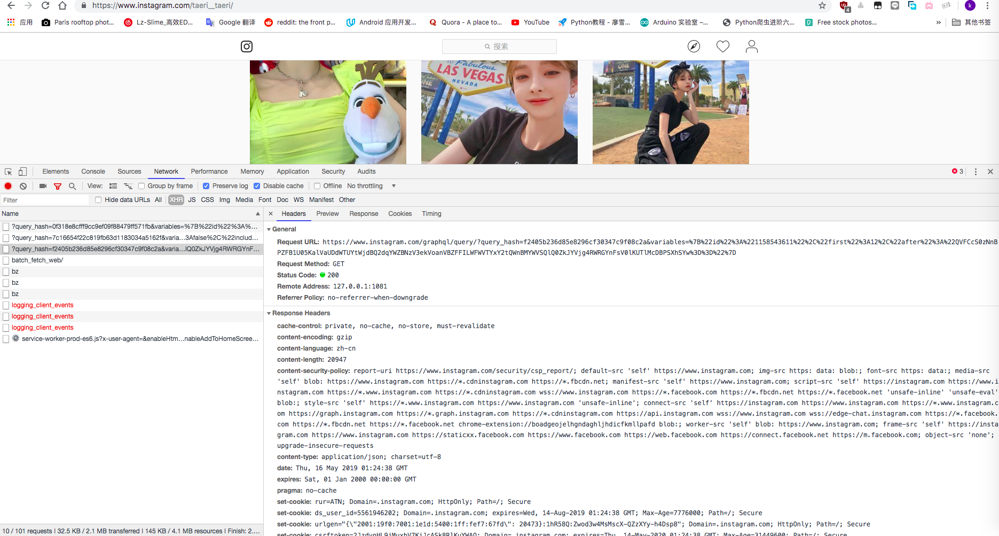
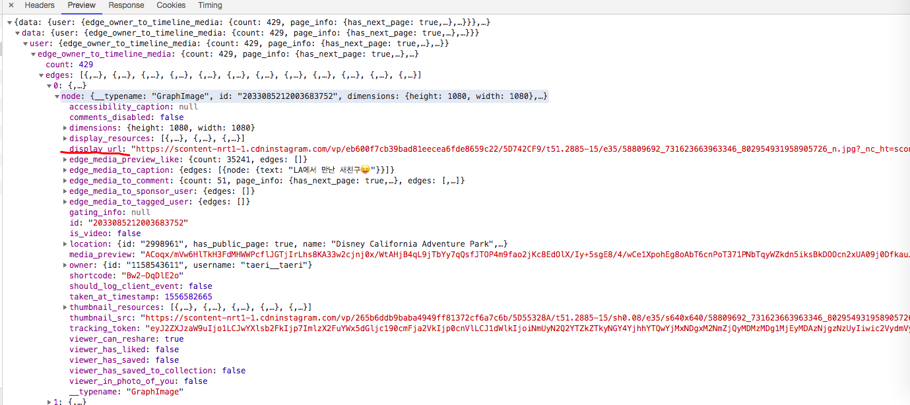
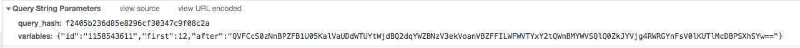

前言
没啥目的，就觉得ins里 图多
因为图都是原图的原因，再又因为是GitHub，图片加载会很慢，我暂时懒得解决
正文
一、分析
1、分析目标网站
首先分析网站图片加载流程， taeri__taeri 应该有人认识这个网红。ins照片一次只加载了一定数量的照片，往下翻又会加载，毫无疑问看 xhr

在预览栏里可以看到json数据，display_url 就是照片的链接，只要获取到这个就行了

2、分析请求参数
回到 headers 看看请求用了哪些参数；就两个， quer_hash 和 variables

variables 是一个json，里面有 id、first、after 这三项；为了不麻烦。。我直接说这三个是啥玩意儿，有兴趣的可以自己分析
id：user id 即用户id
first：这次请求加载照片数量
after：end cursor 这个参数是为了判断上一页的，没有这个就一直加载的第一页，而本页会带有一个end cursor参数来进行下一页请求
还有一点，需要加上cookie，这个应该不用多说了
3、程序流程
请求啥的都分析好了，接下来就来分析程序怎么写，我现在的需求是这样的
给定一个用户名，尽快获取该用户所有照片并下载到instagram//这个目录下
要求中说了需要尽快，那么单线程就算了，太没效率的，就一个普通网红照片好歹也有几百张；这里用到asyncio，流程是这样的
首先下载和获取图片链接弄成两个任务，在等待获取的时候我先去执行下载里的任务，在等待下载的时候我可以获取下载链接，这就是一个生产者消费者模式，这里涉及到了通信，我用queue。
二、代码
用到的lib：
1
2
3
4
5
6
7
8
9
10
11
12
13
| import json
import multiprocessing
import sys
from urllib.parse import urljoin
import aiohttp
import asyncio
import os
import re
from pathlib import Path
import requests
|
__init__:
1
2
3
4
5
6
7
8
| def __init__(self, username, maxtasks=200):
self.username = username
self.maxtasks = maxtasks
self.queue = asyncio.Queue(maxsize=maxtasks * 2)
os.environ['http_proxy'] = PROXY
os.environ['https_proxy'] = PROXY
self.session = aiohttp.ClientSession(trust_env=True, headers=HEADERS)
|
首先获取user id：
1
2
3
4
5
6
7
8
9
10
11
12
13
14
15
16
17
18
19
20
21
22
23
24
25
26
27
28
29
| async def get_shared_data(self):
"""
获取 shared data
:return:
"""
try:
async with self.session.get(ROOT_URL + self.username) as resp:
html = await resp.text()
if html is not None and '_sharedData' in html:
shared_data = html.split("window._sharedData = ")[1].split(
";</script>")[0]
if not shared_data:
print('!!!!!!!')
exit(1)
return json.loads(shared_data)
except Exception:
pass
async def init(self):
"""
初始化必要参数
:return:
"""
user = (await self.get_shared_data())['entry_data']['ProfilePage'][0]['graphql']['user']
if not user:
print('user is none.')
exit(1)
self.user_id = user['id']
self.count = user['edge_owner_to_timeline_media']['count']
|
生产者：
1
2
3
4
5
6
7
8
9
10
11
12
13
14
15
16
17
18
19
20
21
22
23
24
25
26
27
28
29
| async def produce_download_urls(self, max=50):
"""
获取每一页的所有照片链接
:param max: 一次要获取照片数量
:return:
"""
end_cursor = ''
while True:
pic_params = {
'query_hash':
'f2405b236d85e8296cf30347c9f08c2a',
'variables':
'{{"id":"{0}","first":{1},"after":"{2}"}}'.format(
self.user_id, max, end_cursor),
}
pic_url = ROOT_URL + 'graphql/query/'
async with self.session.get(pic_url, params=pic_params) as resp:
json = await resp.json()
edge_media = json['data']['user'][
'edge_owner_to_timeline_media']
edges = edge_media['edges']
if edges:
for edge in edges:
await self.queue.put(edge['node']['display_url'])
has_next_page = edge_media['page_info']['has_next_page']
if has_next_page:
end_cursor = edge_media['page_info']['end_cursor']
else:
break
|
消费者：
1
2
3
4
5
6
7
8
9
10
11
12
13
14
| async def download(self):
"""
下载照片
:return:
"""
while not (self.producer.done() and self.queue.empty()):
url = await self.queue.get()
filename = PATH / url.split('?')[0].split('/')[-1]
async with self.session.get(url) as resp:
with filename.open('wb') as f:
async for chunk in resp.content.iter_any():
f.write(chunk)
self.queue.task_done()
print('.', end='', flush=True)
|
run：
1
2
3
4
5
6
7
8
9
10
11
12
13
| async def run(self):
"""
:return:
"""
print('Preparing...')
print('Initializing...')
await self.init()
print('User id: %r.' % self.user_id)
print('Total %r photos.' % self.count)
print('-'*50)
self.producer = asyncio.create_task(self.produce_download_urls())
print('Downloading...', end='', flush=True)
await asyncio.gather(*(self.download() for _ in range(self.maxtasks)))
|
check：
1
2
3
4
5
6
7
8
9
10
11
12
13
14
15
16
| def check(_):
"""
检测照片数量。。。太菜了不知道怎么停止只能这样了（逃；
"""
print('Start check...')
with requests.get(urljoin(ROOT_URL, USERNAME), headers=HEADERS,
proxies={'http': 'http://localhost:80001', 'https': 'https://localhost:8001'}) as resp:
pattern = '"edge_owner_to_timeline_media":.?{"count":(.*?),"page_info"'
count = int(re.findall(pattern, resp.text)[0])
while True:
files = len(os.listdir(PATH))
print('Check files:%r' % files)
if files == count:
print('\nProduce done, Total %r photos, plz wait save done :)' % count)
sys.exit(0)
|
main：
1
2
3
4
5
6
| async def main():
ins = Instagram(USERNAME)
try:
await ins.run()
finally:
await ins.close()
|
if __name__ == ‘__main__‘:
1
2
3
4
5
6
7
8
9
10
| if __name__ == '__main__':
try:
p = multiprocessing.Process(target=check, args=(0,))
p.start()
future = asyncio.ensure_future(main())
loop = asyncio.get_event_loop()
loop.run_until_complete(future)
loop.close()
except KeyboardInterrupt:
pass
|
运行：

最后
项目地址
感谢观看 :)